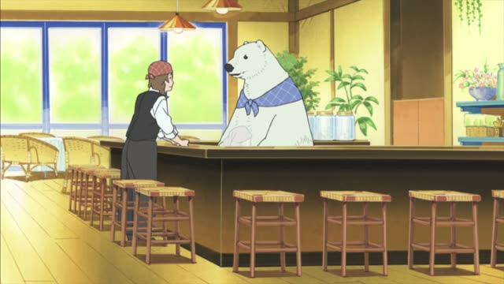
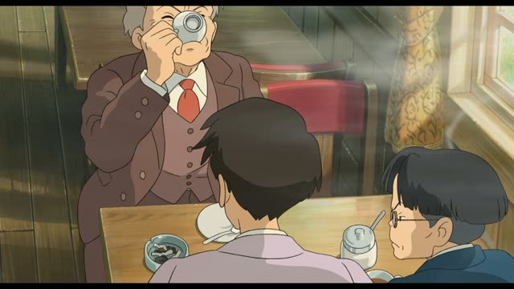
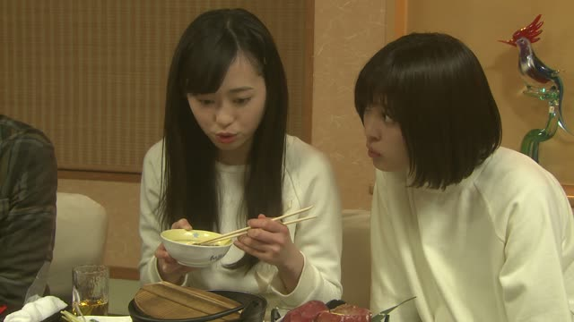

もらう (貰う)
Spirited Away
でも、ヒントか何かもらえませんか？
"But couldn't I get a hint or something?"
もらう means to get, to receive: something comes to you from someone else.
The thing gets を (dropped here), the giver gets に or から. On this card, もらえる is "can get", and the negative question もらえませんか is an extra-polite "couldn't I get?".
Polite: もらいます, もらいました. Casual: もらう, もらった.
Midnight Diner: Tokyo Stories · Season 2, Episode 8
おい １つ もらうぞ。
"Hey, I'm taking one."
もらう is receiving, told from the side of the person who gets it. On this card, a customer grabs one from the plate: １つもらう = "I'll have one".
Quick Examples
A coworker asks about your new watch.
父にもらいました。
"I got it from my dad."
The giver gets に: 父に. Who received? You, so no need to say it.
PoliteYour friend sees a pile of chocolate on your desk.
みんなからもらった。
"I got them from everyone."
から works too: "from everyone". に and から mean the same here.
CasualAt the hotel front desk, you want a map.
地図をもらえますか。
"Could I get a map?"
The thing gets を: 地図を.
PoliteThe shop is giving away free samples.
これ、もらっていい？
"Can I take this?"
もらっていい: "is it okay if I take it?"
CasualWith and without
友達に本をもらいました。
"I got a book from my friend." Same event, but told from your side: you're the one receiving.
Examples from Media
Kekkon Dekinai Otoko · Episode 7
じゃあ 僕が１つ もらいますよ。
"Then I'll take one."

Shirokuma Cafe · Episode 35
これ もらったんですけど…
"I got this, but..."
もらった + んです: polite.
Midnight Diner: Tokyo Stories · Season 2, Episode 3
お金 もらえるんですか？
"You get paid?"
もらえる: "can get".

The Wind Rises
スタッフに本庄をもらえませんか。
"Could I have Honjo on my staff?"
もらえませんか: a polite "could I get?"

YouTube · video
亜鉛も、しっかりもらっていこう。
"Let's make sure we get some zinc too."
Getting zinc from food. もらっていこう: "let's get it and go on".

Good Morning Call · Episode 14
トロもらうからな。
"I'm taking the tuna."

Shirokuma Cafe · Episode 5
お土産もらった。
"I got a souvenir."
もらう, past tense.
Slam Dunk · Episode 9
写真はもらう。
"I'll take the photo, though."
He won't join the club, but he keeps the photo.
Further Reading
A Dictionary of Basic Japanese Grammar
Entry "morau¹" · pp. 261–263
Tae Kim's Guide to Japanese Grammar
Giving and Receiving · When to use 「もらう」